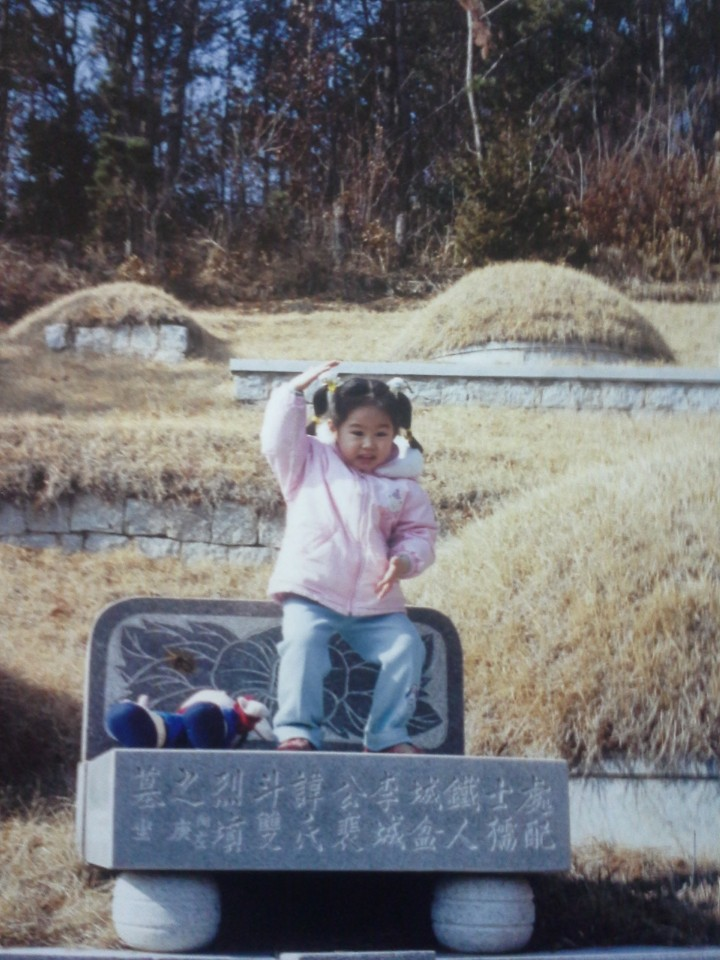

자기소개페이지

아마 초등학교..? 어렸을때 볼살이 많아서 주위에서
인기가많았다
.
나의 재롱인 개다리춤이 특히 인기가많아서 산소에갈때도 재롱을 피웠다.
옆에있는 인형은 뚝딱이인데 나의 최애인형이었다.
대학 사람들과 노는 사진을 첨부하고싶었으나 그 사진 보다 이 사진이 더 잘나와서 첨부했다!
대학생활도 잘 하고 있으며 대외활동과 자격증 준비도 열심히하고있는 현재이다.
뒤로가기